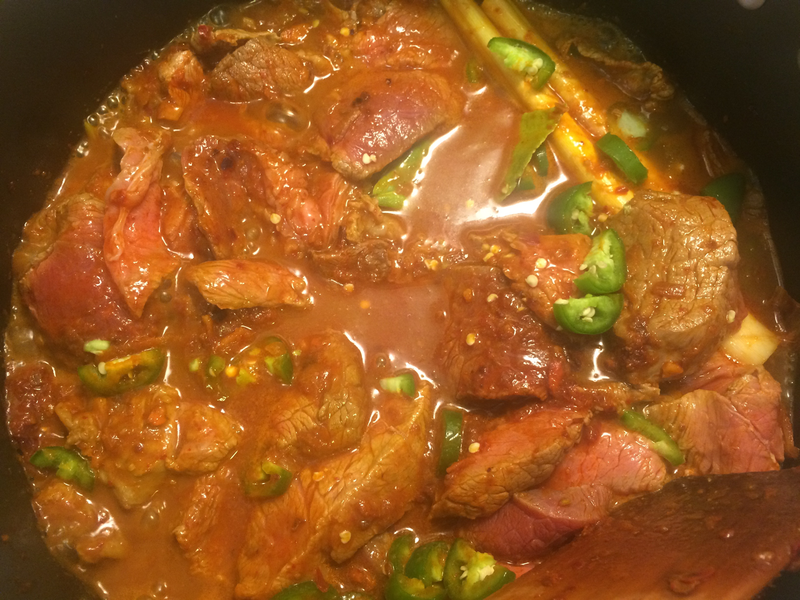

Paste
1 shallot, cut into small pieces
2 cardamom pods
1 star anise
3 garlic cloves, peeled and chopped
2 candle nuts, or 2 almonds, blanched
3 cm piece galangal, chopped
3 cm piece ginger, chopped
2 tsp ground coriander
3 small dried red chillies, seeds removed
4 large dried red chillies, seeds removed
Rendang
2 lbs beef round, sliced into strips
2 serrano chillies, thinly sliced
1/2 tsp lemon juice
2 handfuls of green beans, cut into 2 cm lengths
2 stalks lemongrass, just up to green part, scored
14 oz coconut cream
2 tbsp coconut or peanut oil
1 salam leaf, or 1 bay leaf
3 cardamom pods
1 star anise
4 medium potatoes, boiled 10 minutes, diced
3 medium carrots, boiled 7 minutes, thinly sliced
1 tsp sugar
1 shallot, sliced, fried, for garnishing (optional)
Serves Three Total Time: 120 minutes
Paste
Toast the star anise, cardamom pods and coriander in a small saucepan over low heat for about five minutes. Also include here the star anise and cardamom pods for the rendang that will be used later on.
Add the star anise, cardamom pods, and coriander for the paste to a mortar, set the others aside. Work into a fine powder.
Add all the dried chillies to a blender, and blend for 20 seconds until they are turned into a powder as well. Add the chillies to the mortar to combine with the other spices. Then add in the rest of the paste ingredients and work the mixture until it is paste-like. This may take several minutes. If you don't have a mortar the paste can be made in a blender as well, although the ginger and galangal may need to be chopped more finely first.
Rendang
In a wok or large pot, add 2 tbsp coconut oil and fry the paste for about four minutes over medium heat. Then turn up heat to high, add the beef, and stir-fry for about one minute. Then add in one cup of water and continue to cook over high heat. Add in the toasted star anise, toasted cardamom pods, serrano chilli, salam or bay leaf and the lemongrass.
Stir and cook for about 13 minutes or until most of the water has evaporated.
Then add in the coconut cream, sugar, lemon juice, carrots and potatoes. Continue to cook for another ten minutes over high heat. Salt and pepper to taste.
Reduce heat to medium-low and mix in the green beans. Continue to cook for about ten minutes.
Remove the lemongrass, and the star anise and cardamom pods if you can find them. The dish should not have a lot of sauce but if it is too dry add in some more coconut cream, coconut milk or just plain milk. Serve warm over white rice and garnish with fried shallots.
